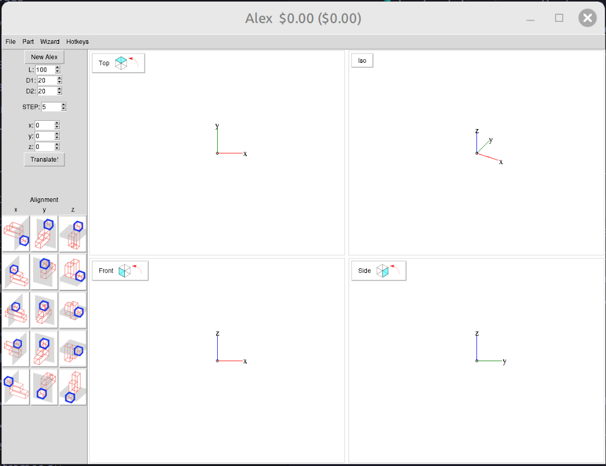

December 6, 2025 - A whirlwind session of security fixes, new features, and code quality improvements
In a single focused session this morning (7:36 AM - 8:16 AM), we transformed Alex CAD with security patches, a major new feature, and comprehensive code refactoring. Here's the complete story:
Updated 24 packages from 2021 versions to modern 2024-2025 releases:
distutils.spawn with shutil.whichFixed a frustrating issue where Alex's window would span across both monitors on dual-monitor setups. The solution was elegant:
window_w = min(root.winfo_screenwidth(), 1920)
window_h = min(root.winfo_screenheight(), 1080)Now the window properly fits on a single monitor while remaining responsive to smaller screens.
This was the game-changer! We completely reimagined the view layout:
Users can now:
With the feature working, we didn't stop there. We performed a comprehensive refactoring to improve long-term maintainability:
Centralized all configuration constants:
class ViewConfig:
DEFAULT_WIDTH = 500
DEFAULT_HEIGHT = 400
SASH_WIDTH = 5
BUTTON_OFFSET_X = 5
BUTTON_OFFSET_Y = 5
RESIZE_DEBOUNCE_MS = 50
ISO_THETA = 240
ISO_PHI = 35Eliminated ~40 lines of repetitive code by creating a reusable component for panel creation. Each of the 4 view panels now uses the same clean, consistent code.
Separated layout logic into its own module with three focused functions:
load_rotation_images() - Image loadingcreate_paned_structure() - PanedWindow creationcreate_view_layout() - Complete layout assemblyThis reduced AlexCAD.py by ~90 lines!
Replaced simple flag-based debouncing with a robust after_cancel pattern:
def on_resize(self, event):
if self._resize_after_id is not None:
self.can.after_cancel(self._resize_after_id)
self._resize_after_id = self.can.after(
50,
lambda: self._do_resize(event.width, event.height)
)Added type hints throughout for better IDE support and error detection:
def __init__(
self,
can: tk.Canvas,
ihat: npt.NDArray,
jhat: npt.NDArray,
offset: List[float],
...
)| Before | After |
|---|---|
| Fixed grid layout, no resizing | ✅ Dynamic resizable panels |
| Security vulnerability (urllib3) | ✅ Patched (urllib3 2.6.0) |
| Outdated dependencies (2021) | ✅ Modern packages (2024-2025) |
| Repetitive panel code | ✅ Clean, modular structure |
| Magic numbers scattered | ✅ Centralized config |
| No type hints | ✅ Full type annotations |
| Dual monitor issues | ✅ Single monitor sizing |
All improvements are merged to the main branch and ready for production use. The codebase is now:
Alex CAD is open source! Check out the repository at github.com/wyolum/Alex
The resizable panels feature makes it easier than ever to customize your workspace for aluminum extrusion design projects.
This incredible 40-minute session demonstrates what's possible when you combine focused effort, modern tools, and a commitment to code quality. From security vulnerability to fully refactored, feature-enhanced application - all in less time than a typical meeting!